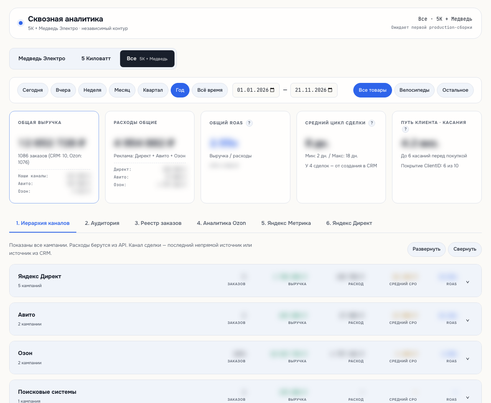
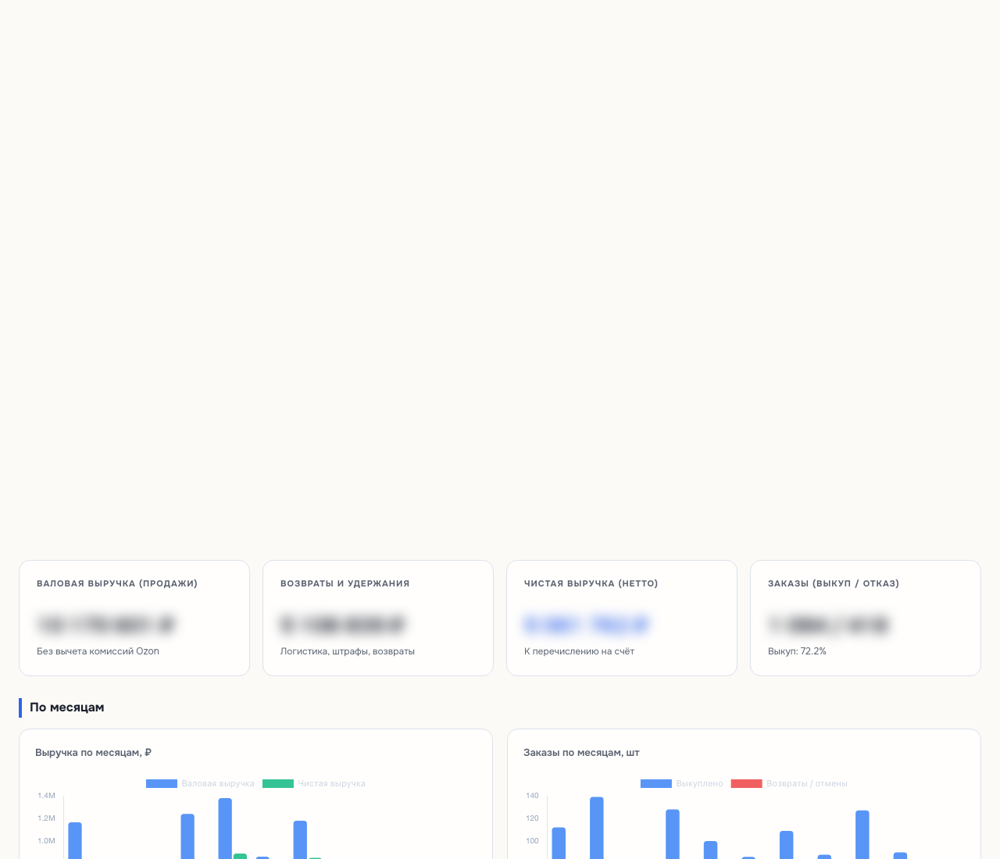
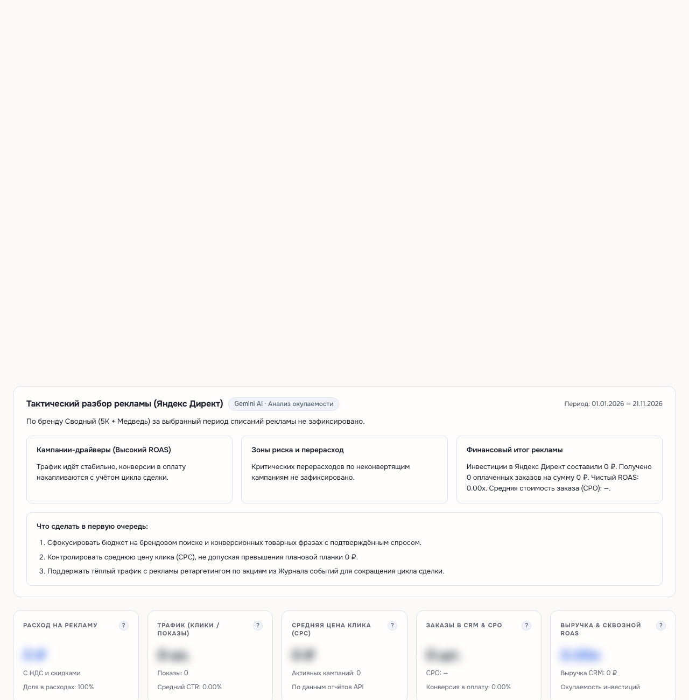
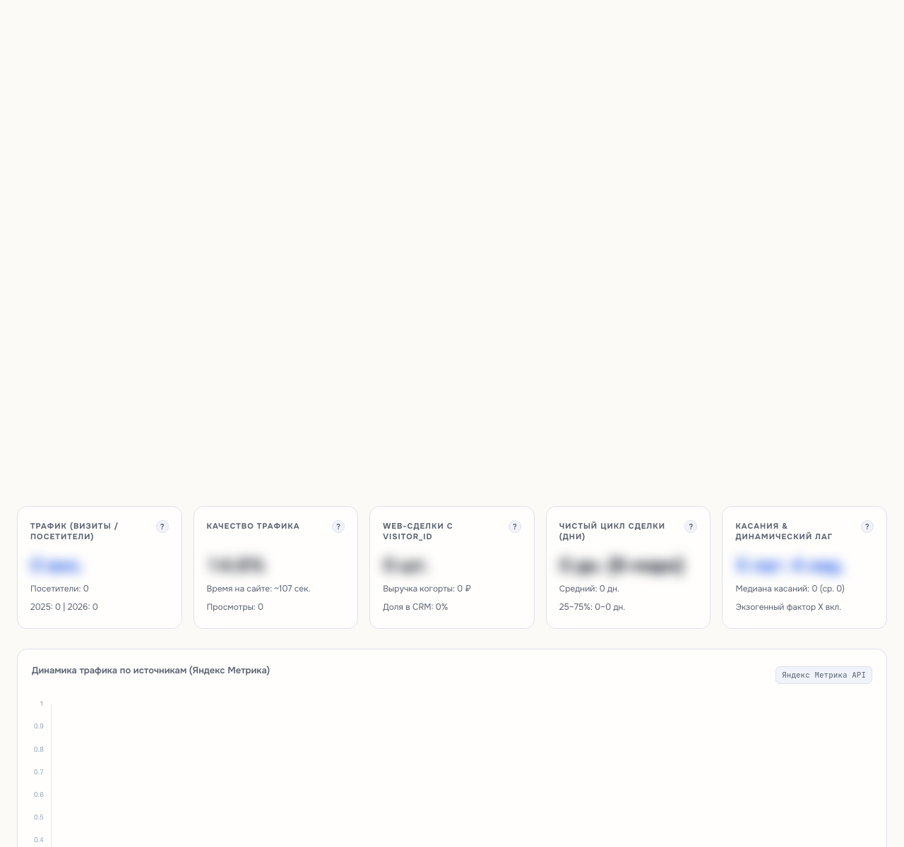
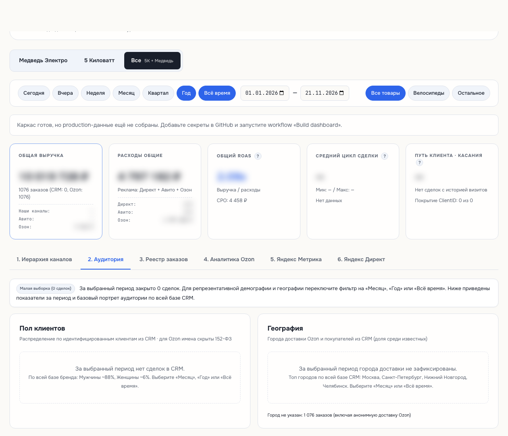

Питон против хаоса: собираем сквозную аналитику без мам, пап и миллионных бюджетов
Стек и технологии
Python, amoCRM API, Яндекс Директ API, Яндекс Метрика API, Ozon Seller API, Авито API, Gemini AI (каскад 7 моделей), SARIMAX & Seasonal Naïve Forecast, экзогенные факторы X, Журнал маркетинговых событий, учет оплат vs отгрузок, GitHub Actions, Render
Результат в цифрах
- Срок запуска системы
- 7 дней
- От пустой идеи до боевого дашборда
- Объединено источников
- 5 сервисов
- amoCRM, Директ, Метрика, Ozon, Авито
- Ручные отчеты в Excel
- 0 часов в неделю
- Автосбор 3 раза в сутки через GitHub Actions
- ИИ-аналитика
- Gemini AI
- Еженедельный тактический разбор кампаний
Точка А: аналитики не было совсем
«Медведь Электро» и «5 Киловатт» продают премиальные и складные электровелосипеды с чеком от 80 000 до 690 000 ₽. В таком бизнесе каждый нецелевой клик в рекламе стоит дорого, а цикл принятия решения может длиться от нескольких дней до месяцев.
При этом в компании системной аналитики не существовало вообще:
- Слепая CRM: сделки падали в amoCRM вручную или звонками без UTM-меток, без связи с рекламными кампаниями и без понимания источника.
- Отсутствие ClientID: на сайтах на Tilda формы не прокидывали идентификатор посетителя (`_ym_uid` / `visitor_id`). Вся многолетняя база сделок была полностью оторвана от истории веб-сессий.
- Ozon как «черный ящик»: маркетплейс генерировал миллионные обороты и возвраты, но жил в отдельном кабинете и никак не сопоставлялся с общим маркетинговым P&L.
- Искажение гео-данных Метрикой: из-за особенностей маршрутизации мобильных операторов (МегаФон, МТС, Tele2) и VPN Яндекс Метрика массово определяла реальных региональных покупателей как «Москва».
- Два разных бренда: «Медведь Электро» и «5 Киловатт» имели свои сайты, разные кабинеты Метрики и Авито, но частично общую команду и продажи. Нельзя было просто перемешать данные в кучу.
Покупка готовых enterprise-систем сквозной аналитики не имела смысла: они требуют ежемесячной абонентской платы в десятки тысяч рублей, долгого внедрения и всё равно не решают проблему сырых данных и специфики маркетплейсов. Было решено собрать собственную независимую систему.

Инженерные вызовы: как мы выкручивались и собирали данные
Чтобы склеить разрозненные куски данных в честную картину, пришлось изобретать нестандартные решения и обходить ограничения платформ:
1. Скрипт захвата `ClientID` на Tilda без поломки конверсий
Исторические сделки без ClientID уже нельзя связать с веб-визитами задним числом. Но для всех новых заказов мы написали кастомный скрипт tracking/tilda-client-id.js. Он внедряется перед закрывающим тегом </body> на Tilda, слушает появление любых форм (включая динамические попапы), через ym(counter, 'getClientID') забирает идентификатор и скрыто вшивает его в форму. В amoCRM создали поле ym_client_id, куда идентификатор попадает автоматически.
2. Трёхуровневый гео-декодер против «московской аномалии»
Яндекс Метрика за счет провайдерских пулов записывала покупателей из регионов в Москву. Мы построили каскадный алгоритм определения города с абсолютным приоритетом CRM:
- 100% приоритет: поля сделки amoCRM («Локация», «Город», «Адрес доставки»);
- Второй эшелон: встроенный парсер телефонных кодов DEF по номеру покупателя;
- Fallback: IP-геолокация Метрики используется только тогда, когда город вообще не заполнен в CRM.
3. Безопасная синхронизация OAuth amoCRM без коллизий
У amoCRM крайне чувствительная авторизация: refresh-токен является одноразовым. Если две независимые системы попытаются обновить токен одновременно, авторизация слетит у обеих. Мы изолировали контуры: репозиторий «Медведя» остался единственным владельцем рефреш-токена, а в новый репозиторий analytics-5k через GitHub Actions передается только свежий временный access_token через тонко настроенный PAT-секрет.
4. Интеграция Ozon: бэкфилл 2025 года и фильтр номенклатуры
Через Ozon Seller API выгрузили транзакции текущего периода и провели разовый бэкфилл всего 2025 года, чтобы скормить модели прогнозирования годовую сезонность (лаг 52 недели). Чтобы аксессуары за 2 000 ₽ не размывали аналитику дорогостоящих байков, разделили заказы правилом: чеки свыше 300 000 ₽ классифицируются как «Велосипеды», остальные — как «Комплектующие».

Встроенный ИИ-аналитик на базе Gemini
Дашборд с десятками таблиц бесполезен, если у руководителя нет времени в них вчитываться. Поэтому мы внедрили модуль автоматической аналитики:
- Каскад из 7 моделей Gemini: скрипт агрегирует данные за неделю и обращается к Gemini API. Если одна модель упирается в лимит квот или задержку, запрос бесшовно подхватывает следующая модель каскада.
- Тактический дайджест по Директу: ИИ сам сопоставляет расход кампаний по моделям байков (GT, Fold, M2) с закрытыми сделками в amoCRM и пишет конкретные рекомендации: где вырос CPO, какую связку масштабировать, а где пересмотреть минус-слова.
- Еженедельное автообновление: дайджест формируется каждый понедельник в 04:00 утра к началу рабочей недели.

Журнал маркетинговых событий и экзогенные факторы X
В e-commerce графики выручки никогда не движутся в вакууме. На продажи влияют распродажи, запуск акций, перебои в логистике или замирание спроса. Если аналитическая модель этого не знает, она строит абстрактные галлюцинации.
Для решения этой проблемы мы создали Журнал маркетинговых событий и акций (база из 42 зафиксированных событий, управляемая прямо из интерфейса дашборда):
- Фиксация ключевых инфоповодов: распродажи («Чёрная пятница», «11.11»), промо-акции (запуск РСЯ со скидкой 25% на модель М2), сезонные поп-апы и предзаказные кампании.
- Учет внешних шоков и логистики: кризис со складами Ozon FBO, вывоз остатков, изменение цен (+10% / +5%), ужесточение условий доставки (переход на 100% предоплату), поступление контейнеров с мотор-колёсами.
- Математический экзогенный вектор X: каждое событие имеет точные даты, силу влияния (например, спад -30% или прирост +20%) и флаг участия в моделировании
is_exog=True. На основе этих данных алгоритм формирует недельный вектор факторов X. - Динамический лаг трафика Метрики: покупка дорогого велосипеда за 200–600 тыс. ₽ не происходит сиюминутно. Модель закладывает динамический лаг в 2–3 недели между всплеском качественного трафика на сайте и фактическими продажами в CRM.
- Связка с ИИ-аналитиком: Gemini в своих еженедельных выводах строго опирается на Журнал событий. Модели запрещено придумывать абстрактные причины — она сопоставляет спад или рост выручки с конкретными реальными событиями («замирание спроса перед 11.11», «кризис логистики маркетплейса», «старт промо по М2»).
Предиктивная модель: SARIMAX, сезонные коэффициенты и разделение оплат vs отгрузок
Стандартные модели прогнозирования ломаются на дорогом сезонном товаре: летом идет взрывной спрос, зимой — спад. Кроме того, в премиальном электротранспорте возникает критический кассово-логистический разрыв: оплата клиентом не равна отгрузке байка со склада.
Клиент может внести 100% предоплату по предзаказу в сентябре (деньги поступили на счет), а сборка и отправка тяжелого электробайка со склада состоится только в октябре или ноябре. Если ориентироваться только на оплаты, отдел снабжения и склад не смогут спланировать сборку и закупку комплектующих.
Архитектура предиктивной системы:
- SARIMAX + Seasonal Naïve (лаг 52 недели): математический расчет строится на полной ретроспективе (включая исторический бэкфилл Ozon за 2025 год). Модель накладывает сезонные коэффициенты и экзогенный вектор факторов X на базовый тренд.
- Разделение двух контуров: Оплаты (Cash-in) vs Отгрузки (Shipments):
- План и факт по оплатам: движение денежных средств по счетам (ДДС);
- План и факт по отгрузкам: фактический отпуск собранных электровелосипедов со склада (складской учет).
- Интерактивная таблица на 9 строк с расчетом сходимости: система ежемесячно сопоставляет плановые показатели с подтвержденным фактом оплат и фактом отгрузок (`manual_actuals`), мгновенно рассчитывая процент выполнения, дельту в рублях и сходимость прогноза.
- Защищенное планирование: собственник и топ-менеджмент могут редактировать целевые ориентиры и вносить подтвержденные отгрузки прямо в интерфейсе через мастер-PIN владельца. Все расчеты автоматически обновляются для всей команды без перезагрузки дашборда.


Хронология: как развернуть Enterprise-уровень за 7 дней
| День | Фокус спринта | Что было сделано |
|---|---|---|
| День 1 (14 ноя) | Архитектура и коннекторы | Изоляция репозитория analytics-5k, базовые API-коннекторы к amoCRM, Директу и Авито, безопасный обмен секретами. |
| День 2–3 (15–16 ноя) | Метрика и ClientID | Скрипт tilda-client-id.js, категоризация кампаний Директа по моделям (GT, Fold, M2), отладка верификации ClientID. |
| День 4 (17 ноя) | Прогноз продаж | Подключение SARIMAX и сезонного наивного прогноза с лагом 52 недели, тесты изоляции данных брендов. |
| День 5 (18 ноя) | Интеграция Ozon | Коннектор Ozon Seller API, бэкфилл 2025 года, порог 300k для велосипедов, исправление геолокации amoCRM над IP Метрики. |
| День 6 (19 ноя) | Внедрение Gemini AI | Каскад из 7 моделей Gemini, автоматический еженедельный тактический дайджест, интерактивный ввод плана с PIN-кодом. |
| День 7 (20–21 ноя) | Полировка и деплой | Расписание автосборки 3 раза в день, деплой сервиса на Render с парольной защитой, единая фильтрация и аудит данных. |
Выводы и результаты
- Отсутствие готовой аналитики — не приговор: даже при полном хаосе в исходных данных (звонки без меток, формы без ClientID, изолированный Ozon) можно за неделю построить надежный фундамент.
- Костыли должны быть инженерными: скрипт для Tilda, эвристика Ozon и приоритет телефонных геокодеров решили проблемы качества данных, с которыми не справляются стандартные сервисы.
- ИИ как рабочий инструмент: Gemini в дашборде работает не как чат-бот для развлечения, а как дежурный аналитик, экономящий часы времени руководства каждую неделю.
Главный вывод
Современный маркетолог-generalist не ждет, пока компания наймет отдел дата-инженеров и внедрит дорогой софт на полгода. Связка Python, понимания API, гибкого кода и ИИ позволяет развернуть боевую сквозную аналитику уровня крупного ритейла ровно за 7 дней.